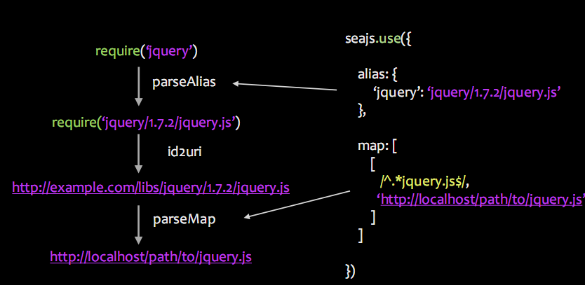

用 seajs 和 grunt 实现
- 前端模块化
by JarvanXing
大纲
- 什么是seajs
- seajs怎么来的
- seajs解决了什么问题
- seajs用法及示例
- grunt又是什么
- grunt用法及示例
 is
is
a Module Loader for the Web
是
适用于 Web 端的 模块加载 器
其它语言的模块机制
PHP
JAVA
C++
javascript的模块呢？ -木有
为了解决命名冲突，我们引入命名空间，看起来像这样：
var Live = {};
Live.bigPortal = {};
Live.bigPortal.utils = {};
Live.bigPortal.utils.each = function(){
...
}
...
看见长的偶就晕，肿么办？
依赖关系基本靠人肉
--我写了一个组件d.js
另外一位同学使用，结果页面报错了！
一检查发现，组件里面有个方法调用另外一个a.js的方法，赶紧在配置文件里面加上a.js，如果是写到页面的话，我还得更改页面的引用
--某天，我扩充了组件的功能，除了需要 a.js 之外，还需要 b.js
这时候，项目中已经有 N 个地方用到了我的组件……
于是我只好找到每一个调用的地方，要么改配置文件，要么改页面
--某天，需求砍掉了组件上的一个交互效果
我修改了d.js 的代码，然后发现我不再需要 a.js
于是我再改配置文件或者页面
测试同学告诉我，改完之后，好多个页面报错！
我赶紧检查，发现有些页面出现d_v2.js,而里面用到了a.js,我改回来....
--一段时间后，测试同学又来找我，说页面又报错了！
再次检查，发现原来是某人动过了b.js,里面引用了a.js，我再改....
CommonJS 社区出现
推出Modules/1.0规范
Modules/1.x---典型代表是nodejs和component
Modules/Async---典型代表是AMD规范及其实现 RequireJS
Modules/wrappings---典型代表CMD规范及其实现seajs
Modules/1.x(CommonJS)
// File:math.js
exports.distance = function(sx, sy, ex, ey) {
var dx = ex - sx;
var dy = ey - sy;
return Math.sqrt(dx * dx + dy * dy);
};
// File: program.js
var distance = require('math').distance;
distance(0,0,300,400); // 500
AMD
// File:util.js
define(['math'],function(math){
return {
distance:function(sx, sy, ex, ey) {
return math.distance(sx, sy, ex, ey)*1000;
};
}
});
// File: program.js
var distance = require('util').distance;
distance(0,0,300,400); // 500
CMD
//所有模块都通过define定义
define(function(require, exports, module) {
//通过require引入依赖
var $ = require(‘jquery’);
var math = require(‘./math’);
通过exports对外提供接口
exports.doSomething = ...
//或者通过module.exports提供整个接口
module.exports= ...
})
就这样
一个模块一个文件
a_very_big_file.js
module_a.js
module_b.js
module_c.js
module_d.js
...
高性能：异步 + 并行
使用简单
---自动管理依赖 + 约定优于配置
// in module_a.js:
require
(‘path/to/module_x’);
// in html page:
seajs. use
(‘path/to/main’);
// in deployment:
$ grunt build
or $ spm build main.js --combine
可维护性
---无命名空间冲突 + 多版本共存
var book = Live.T.Book;
var desc = Live.B.Desc;
// in module_x.js:
var book = require('Book');
var desc = require('Desc');
<script src=”jquery-1.2.6.js”>
<script src=”jquery-1.7.1.js”>
<script>
var jq17 = $.noConflict(true);
</script>
// in module_x.js:
var jq12 = require(‘jquery/1.2.6/jquery’);
var jq17 = require(‘jquery/1.7.1/jquery’);
跨环境
---通用模块只需编写一次
// in html page:
seajs.use('./init.js');
// in init.js:
var QS = require(‘querystring’);
// in node environment:
$ node init.js
// in init.js:
require(‘seajs’);
var QS = require(‘querystring’);
已有哪些公司在用？
基本用法
使用 exports 对外提供接口
使用use的回调函数获取加载的模块对象
init.js:
define(function(require, exports) {
exports.message = ‘Hello, world!’;
});
test.html:
<script src="libs/seajs/2.1.1/sea.js"/>
<script>
seajs.use(‘./init’,function(init){
alert(init.message);
});
</script>
使用 require获取其他模块对象,自动处理依赖
---关注点分离：直接依赖的模块 + 向外提供的接口
//city.js:
define(function(require, exports) {
var io = require(‘./io’);
...
exports.getSum = function(city) { ... };
});
//init.js:
define(function(require, exports) {
var city = require(‘./weather’);
var sum = city.getSum('shenzhen');
exports.sum = sum;
});
延迟异步加载
define(function(require, exports, module) {
var a = require(‘./a’);
require.async(‘./b’, function(b) {
...
});
exports.x = ... ;
});
转换--transport
//普通模块
(function() {
if (typeof ABC === ‘undefined’) {
ABC = {};
}
ABC.doSth = function() { ... };
ABC.someMember = ...;
})();
//CMD模块
define(function(require, exports) {
var ABC = exports;
ABC.doSth = function() { ... };
ABC.someMember = ...;
});
多版本共存
---SeaJS的模块，理想情况下，不再有全局变量。
old_module.js:
define(function(require, exports) {
var $ = require(‘jquery/1.7.1/jquery’);
...
});
new_module.js:
define(function(require, exports) {
var $ = require(‘jquery/1.9.1/jquery’);
...
});
API
- define--模块定义函数
- require--加载模块
- exports--对外提供模块接口
- module--对外提供整个接口
- seajs.use--用来在页面中加载模块
- seajs.config--配置
seajs.config(options) 配置
seajs.config({
// 别名配置
alias: {
'jquery': 'jquery/1.10.1/jquery'
},
// 路径配置
paths: {
'gallery': 'http://localhost/gallery'
},
// 变量配置
vars: {
'locale': 'zh-cn'
},
// 映射配置
map: [
['http://example.com/js/app/', 'http://localhost/js/app/']
],
// 预加载项
preload: [
this.JSON ? '' : 'json'
]
});
SeaJS 加载过程
/* a.js */
define(function(require, exports, module) {
var b = require(‘./b’)
var c = require(‘./c’)
// ...
})
/* main.js */
seajs.use(‘./a’)
Step 1： 解析 ‘./a’
Step 2.1: 下载 a
Step 2.2: 执行 define，保存 a 的 factory
Step 2.3: 得到依赖 b 和 c
Step 2.4: 加载 b 和 c
Step 3: 执行 a 的 factory，得到 a 的 module.exports
SeaJS 路径解析

SeaJS 例子

Q：Grunt为何物？
A：一个专为JavaScript提供的构建工具。
Q：啥是构建工具？
A：在项目部署上线前，通常要将源文件压缩，合并。
在将js模块化后，又多了一个分析，提取业务代码中所依赖模块的工作。
解决这一系列繁重工作的自动化工具，称之为构建工具。
Q：grunt是如何工作的？
A：就好像一个万能工厂（grunt），只负责执行任务（Task），不关心每个任务到底都干了什么。
安装grunt CLI
前提是已经安装了nodejs和npm。
npm install -g grunt-cli
在项目中使用grunt
首先需要往项目里添加两个文件：package.json和Gruntfile.js
package.json:该文件用来为npm存放项目配置的元数据，与grunt关系最大的配置在devDependencies中。
//package.json
{
"name": "webapp",
"version": "0.0.1",
"devDependencies": {
"grunt": "~0.4.1",
"grunt-cmd-transport": "~0.2.9",
"grunt-cmd-concat": "~0.2.4",
"grunt-contrib-uglify": "~0.2.0",
"grunt-contrib-clean": "~0.4.0"
}
}
Gruntfile.js:注意G的大写，这个文件就是grunt的配置了，其中详细定义了每个任务的细节和执行任务的顺序等。
安装grunt
在命令行进入项目所在目录，键入如下命令即可，npm会根据devDependencies中的配置，将需要的grunt及其插件下载到你的项目目录中。
npm install